codly.gutter-column
Defines one independently styled column beside a code block. Use it in gutters to show source-line labels, markers, or other row-specific content.
Signature
codly.gutter-column(
values: array<none | str | int | float | content> | function,
width: auto | length | ratio | fraction = auto,
align: auto | alignment = auto,
inset: auto | length | dictionary = auto,
stroke: auto | stroke | dictionary | none = auto,
fill: auto | paint | array<paint | none> | function | none = auto,
text: dictionary = (:),
)values is required and named. Arrays and functions can also be passed directly as gutter column specifications; dictionaries are cast to this type.
Parameters
| Field | Type | Default | Meaning |
|---|---|---|---|
values |
array<none | str | int | float | content> or function |
Required | Values to display, or a callback that returns a value for a rendered row. |
width |
auto, length, ratio, or fraction |
auto |
Column width. |
align |
auto or alignment |
auto |
Cell alignment. |
inset |
auto, length, or dictionary |
auto |
Cell inset. |
stroke |
auto, stroke, dictionary, or none |
auto |
Cell stroke. |
fill |
auto, paint, array<paint | none>, function, or none |
auto |
Cell fill, a row-indexed fill palette, or a row callback. |
text |
dictionary |
(:) |
Arguments passed to text when displaying a value. |
Behavior
Array values are indexed by one-based source line, even when a code block uses ranges, offsets, or generated skip rows. Missing entries and none leave a cell empty. A callback receives the rendered row dictionary with index, kind, source-line, number, and text. index counts displayed rows, including headers and callouts; source-line is one-based for source rows and none for generated rows. Callbacks may return content, strings, numbers, or none.
Only code and skip rows have gutter cells. Values are validated when resolved, and width must be non-negative. auto alignment and insets inherit the number column’s settings; fill: auto follows the body row. A fill callback also receives the row dictionary, with text populated from the source line where available.
Example: Basic Usage
#import "@preview/codly:2.0.0" as codly
#codly.new(
```
let answer = 42
print(answer)
```,
gutters: (
codly.gutter-column(
values: row => if row.kind == "code" {
str(row.source-line) + ". " + row.text
} else { none },
align: right,
inset: (left: 4pt, right: 8pt),
fill: gray.lighten(90%),
),
),
)Edit & run on your device
Changing the controls or source loads a locally hosted Typst compiler (~29 MB). Edits stay in this tab, disappear on navigation, and are never uploaded. Only bundled packages and fonts are available.
The highlighted source and output update after you stop typing. Copy code includes your edits.
